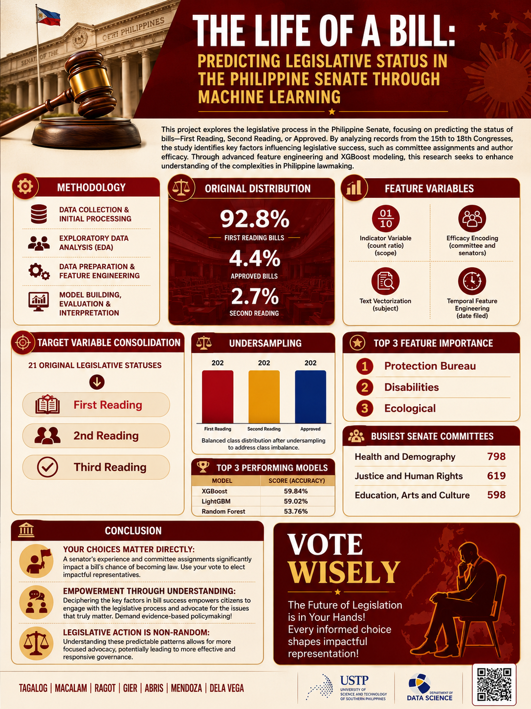
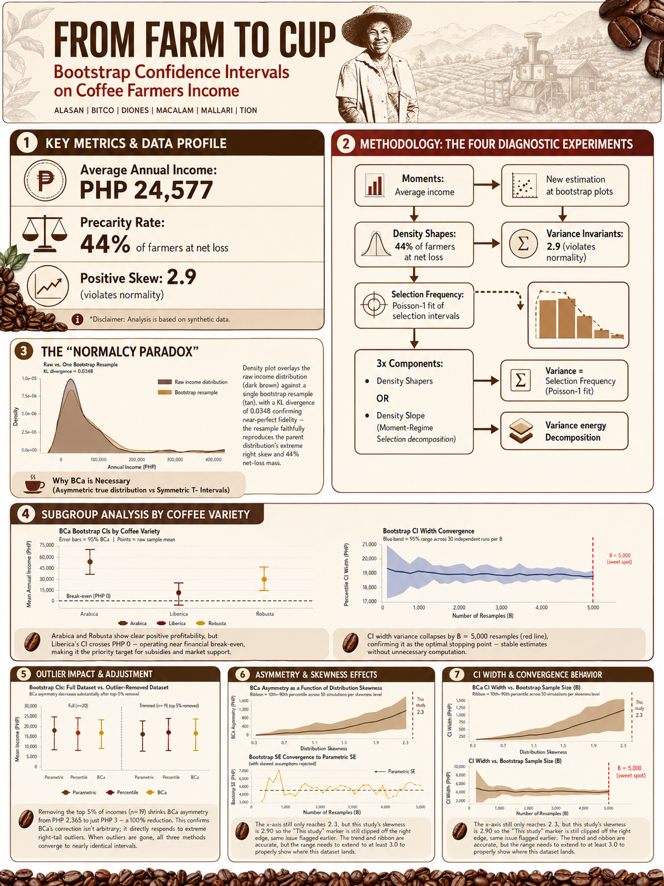

Python analysis
Cleaning, EDA, feature engineering, model comparison, and notebook-based reporting.
Data Science Student | Analytics and ML Projects
I build explainable data science projects that turn messy datasets into clean insights, machine learning models, dashboards, and decision-ready stories.
Senate bills modeled after cleaning
Coffee farmer records analyzed
Predictive modeling and uncertainty analysis
Portfolio snapshot
Selected tools, project areas, and links gathered in one place.
Cleaning, EDA, feature engineering, model comparison, and notebook-based reporting.
Comfortable with structured data, database thinking, and pipeline-style workflows.
XGBoost, classification, feature importance, and evaluation narratives.
Decision-focused visuals, KPI summaries, and chart storytelling.
Projects are framed around problem, data, method, result, and impact so technical work is easy to understand.
Open repositories and project documentation.
Download a recruiter-ready PDF resume.
Open to internships, part-time data roles, and focused project work.
Selected work
Each project connects a real question to a technical workflow: collect, clean, analyze, model, explain, and present the result.

Predicted Philippine Senate bill status from historical legislative data, showing how committee assignment, policy area, filing timing, and author history can signal bill progress.

Used bootstrap confidence intervals to estimate Bukidnon coffee farmers' income more responsibly when the income distribution is uneven and uncertain.

Built a deployed Streamlit travel assistant for Cagayan de Oro trip planning using a static local attractions database and RAG-style prompting.
A practical decision-support project for inventory monitoring, reporting, and reorder planning using dashboard-style summaries and business rules.
Built as a business analytics concept for monitoring inventory status, surfacing reorder needs, and turning routine records into decision support.
AI-based eye screening proof-of-concept combining image processing, model prediction, and lightweight deployment thinking with Raspberry Pi and Flask.
The concept connects image capture, preprocessing, model inference, and a lightweight Flask interface for explaining screening output.
Proof of work
A factual summary of the portfolio materials available for review.
Project code and documentation are available for selected work.
Downloadable resume for internship, part-time, and project applications.
Machine learning, statistics, dashboard thinking, AI capstone, and a deployed Streamlit app.
Open to data science, analytics, ML internship, and focused reporting projects.
Interactive preview
Click through the workflow a client or recruiter cares about: exploration, modeling, dashboarding, and insights.
Check missing values, clean columns, inspect distributions, and compare groups before choosing charts or models.
Use validation results, model comparison, and feature importance so outputs are explainable and not treated like magic.
Summarize KPIs, trend changes, status groups, and next actions so the output can support decisions quickly.
Every project should state the result, limitation, recommendation, and follow-up action for the audience.
Capabilities
Recruiters can scan the toolkit quickly. Clients can see what kind of project work I can support.
Python, Pandas, data cleaning, exploratory analysis, spreadsheet review, public dataset preparation.
Scikit-learn, XGBoost, model comparison, feature engineering, classification workflows.
Bootstrap resampling, confidence intervals, uncertainty reporting, R Markdown analysis.
Project posters, charts, dashboards, model explanation visuals, presentation-ready summaries.
SQL, FastAPI basics, GitHub, notebook workflows, static websites, technical documentation.
For teams and clients
I work best on focused data tasks where the output needs to be understandable, documented, and useful for decisions.
Prepare messy CSV, spreadsheet, or scraped data for analysis, reporting, and modeling.
Build concise visuals, summaries, and project reports that explain what the data means.
Create early predictive models, compare performance, and explain important features.
Estimate uncertainty, compare groups, and communicate limits clearly for nontechnical readers.